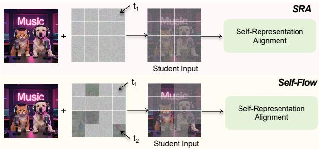

From SRA to Self-Flow: Data Augmentation or Self-Supervision? Dengyang Jiang; Mengmeng Wang; Harry Yang; Jingdong Wang；机构信息未在 arXiv 摘要页结构化列出，以论文 PDF 为准。 arXiv new; diffusion self-representation alignment 原文链接
Figureure 4 · Comparison between single-timestep and dual-timestep training under maFigure 4. Comparison between single-timestep and dual-timestep training under matched attention settings. Left: without Attention Separation. Right: with Attention Separation. Dual-timestep training consistently improves over single-timestep training under both full attention and attention-separation, supporting the view that its benefit comes from noise-state augmentation.这张图/表用于判断 From SRA to Self-Flow 的实验收益来自哪里。重点看替换、消融或跨模型设置下趋势是否一致，而不是只看单个最高分。

Figureure 1 · Difference Between Self-Flow and SRAFigure 1. Difference Between Self-Flow and SRA. Self-Flow adopts SRA’s Self-Representation Alignment method while differs in the student input processing: SRA utilizes a single noise level (t<sub>1</sub>) for all student input tokens, whereas Self-Flow employs a dual-timestep scheduler where tokens at two distinct noise levels (t<sub>1</sub> and t<sub>2</sub>) coexist in the same image.这张图来自论文 PDF 的结构化抽取。当前用于辅助理解 From SRA to Self-Flow 的方法或实验，请结合正文精读段落一起看。